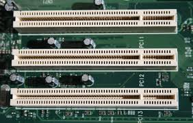

CPU COMPONENTS
| Sr.No |
Name |
Image |
Specification |
| 1 |
Register |
 |
1. General-purpose registers (e.g., AX, BX in x86
architecture)
2. Special-purpose registers (e.g., Program Counter,
Stack Pointer)
3. Size: 8-bit, 16-bit, 32-bit, or 64-bit
|
| 2 |
Cache Memory |
 |
1. L1 Cache (Fastest, smallest, ~64KB per core)
2. L2 Cache (Larger, slower than L1, ~256KB to 2MB per
core)
3. L3 Cache (Shared among cores, ~4MB to 128MB)
|
| 3 |
Clock Generator |
 |
Measured in GHz (e.g., 3.5 GHz means 3.5 billion cycles per
second). |
| 4 |
Buses |
 |
1. Data Bus Width: 32-bit, 64-bit (determines how much data
is processed at a time).
2. Address Bus Width: Determines the amount of memory
the CPU can address (e.g., 32-bit can address 4GB of RAM,
64-bit can address much more).
3. Control Bus: Manages signals for operations like
read/write.
|
| 5 |
Floating Point Unit |
 |
Operates at the same speed as ALU but optimized for
floating-point math. |
| 6 |
Integrated Graphics Processing Unit |
 |
Varies based on CPU model, e.g., Intel UHD, AMD Radeon
Vega. |
| 7 |
Thermal Design Power |
 |
Measured in watts (W), e.g., 65W, 125W. |
| 8 |
Control Unit |
 |
Works at the same speed as the CPU clock, handles
instruction sequencing. |
| 9 |
Arithmatic Logic Unit |
 |
32-bit, 64-bit, or 128-bit processing width. |
| 10 |
instruction Pipelines |
 |
1. 5-stage pipeline (basic CPUs).
2. 10–20 stage pipeline (modern CPUs). |
| 11 |
Load-Store Unit |
 |
32–128 buffer entries for high-performance CPUs. |
| 12 |
Vector Processing Unit |
 |
Includes MMX, SSE, AVX instruction sets. |
| 13 |
Inturrupt Controller |
 |
Advanced Programmable Interrupt Controller (APIC) for
multi-core systems. |
| 14 |
Memory Management Unit |
 |
Uses a Translation Lookaside Buffer (TLB) for fast memory
translation. |
| 15 |
Prefetch Unit |
 |
Uses speculative execution to boost performance. |